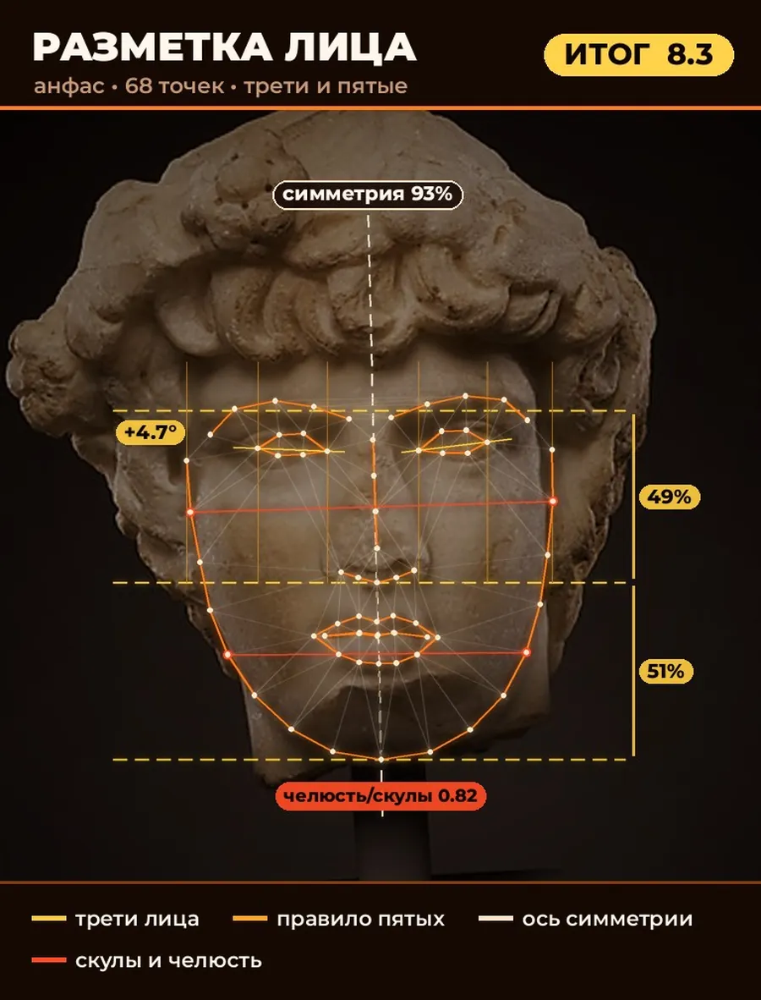
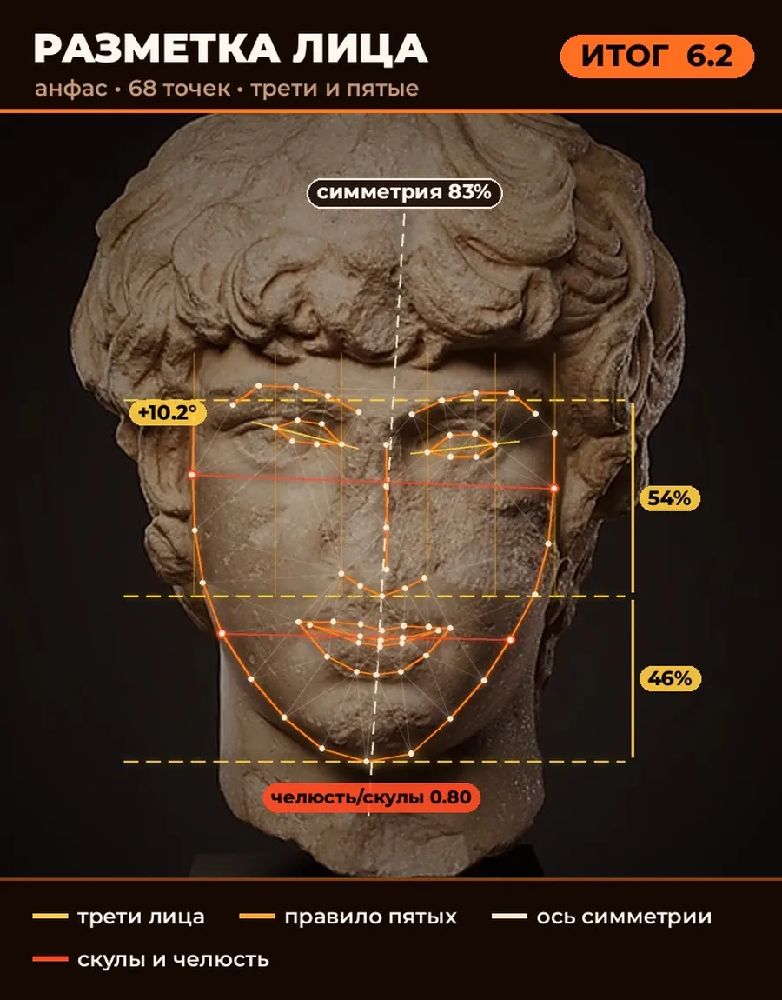

Тренды
Мьюинг после хайпа: что осталось от главного тренда
Тренд обещал чёткую линию челюсти благодаря положению языка, а спустя несколько лет от него остались разумные привычки и ни одного доказанного чуда.
22 античные головы прошли через бот для оценки лиц. Два портрета Антиноя получили 8,3 и 6,2.
Тренд обещал чёткую линию челюсти благодаря положению языка, а спустя несколько лет от него остались разумные привычки и ни одного доказанного чуда.
Почему удары по скулам и челюсти не «растят» кость и чем заканчивается этот тренд.
Базовые привычки с лучшим соотношением усилий и результата: режим сна, вода, ежедневный SPF и простой уход.
Откуда пошёл тренд на «хищные» глаза, что в нём правда и чем опасны операции ради него.
Барбершопы подбирают стрижку по геометрии лица. Скептики напоминают, что фактура волос и вкус важнее схемы.
Мы прогнали 22 головы из открытой коллекции музея Метрополитен через алгоритм оценки лица. Два портрета одного и того же Антиноя разошлись больше чем на два балла.


22 греческие и римские головы из Метрополитен-музея против алгоритма для селфи: кто набрал больше всех и почему.
Что в мьюинге разумно, что не доказано и почему фото «до и после» вводят в заблуждение.
Почему удары по скулам и челюсти не «растят» кость и чем заканчивается этот тренд.
Базовые привычки с лучшим соотношением усилий и результата: режим сна, вода, ежедневный SPF и простой уход.
Камера, свет, фильтры и разные эталоны: откуда берётся разброс баллов и как снять честное фото.
Откуда пошёл тренд на «хищные» глаза, что в нём правда и чем опасны операции ради него.
Колумнистка о том, как взять из луксмаксинга полезные привычки и не превратить внешность в приговор.
Барбершопы подбирают стрижку по геометрии лица. Скептики напоминают, что фактура волос и вкус важнее схемы.
Как осанка и процент жира меняют линию челюсти на фото и что с этим делать без риска.
Почему оценки внешности по отфильтрованным фото ничего не значат и как честно отслеживать прогресс.
«Улучшать себя из любви и из ненависти: снаружи одинаково, а изнутри это две разные жизни»